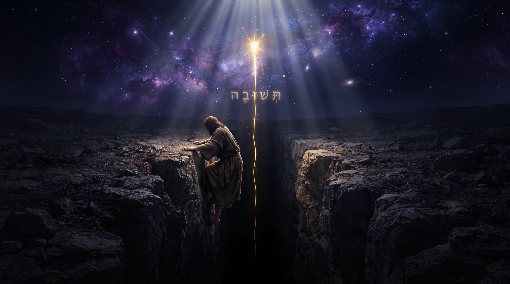

L alliance de tous, et le choix de la vie
Nitsavim-Vayélekh 5786
Très proche de toi
Le dernier Chabbat de l'année s'ouvre sur une phrase qui a l'air d'une évidence, et qui n'en est pas une. Cette mitsva n'est pas trop merveilleuse pour toi. Elle n'est pas loin. Pourquoi la Torah a-t-elle besoin de le dire avec autant d'insistance ? Tout le monde cite ce verset pour se rassurer, et la guemara le retourne d'une phrase.
Une Torah qui jure d'être proche
Il y a des versets qui répondent à des questions que personne n'avait osé formuler. כִּי הַמִּצְוָה
הַזֹּאת אֲשֶׁר אָנֹכִי מְצַוְּךָ הַיּוֹם לֹא נִפְלֵאת הִוא מִמְּךָ וְלֹא רְחֹקָה הִוא. לֹא בַשָּׁמַיִם הִוא לֵאמֹר מִי יַעֲלֶה לָּנוּ הַשָּׁמַיְמָה וְיִקָּחֶהָ לָּנוּ וְיַשְׁמִעֵנוּ אֹתָהּ וְנַעֲשֶׂנָּה. וְלֹא מֵעֵבֶר לַיָּם הִוא לֵאמֹר מִי יַעֲבָר לָנוּ אֶל עֵבֶר הַיָּם וְיִקָּחֶהָ לָּנוּ וְיַשְׁמִעֵנוּ אֹתָהּ וְנַעֲשֶׂנָּה. כִּי קָרוֹב אֵלֶיךָ הַדָּבָר מְאֹד בְּפִיךָ וּבִלְבָבְךָ לַעֲשֹׂתוֹ (Devarim 30:11-14).
« Car cette mitsva que je t'ordonne aujourd'hui n'est pas trop merveilleuse pour toi et elle n'est pas éloignée. Elle n'est pas dans les cieux, pour dire : qui montera pour nous aux cieux, la prendra pour nous et nous la fera entendre, et nous l'accomplirons ? Et elle n'est pas au-delà de la mer, pour dire : qui traversera pour nous au-delà de la mer, la prendra pour nous et nous la fera entendre, et nous l'accomplirons ? Car la chose est très proche de toi, dans ta bouche et dans ton cœur, pour l'accomplir. »
Quatre négations pour une seule affirmation : la Torah écarte d'abord le merveilleux, l'éloignement, le ciel et l'outre-mer, et ce n'est qu'ensuite qu'elle dit que la chose est très proche.
On ne jure jamais de ce dont personne ne doute. S'il faut quatre phrases pour écarter la distance, c'est que la distance est exactement ce que nous croyons.
L'homme à qui l'on demande de servir D.ieu ne se dit pas d'abord que c'est faisable. Il se dit qu’il faudrait être un autre, né ailleurs, élevé par d'autres, pourvu d'un cœur et d’un cerveau différents. Cette pensée est confortable parce qu'elle acquitte, puisque ce qui se tient hors de portée ne se reproche à personne. Le verset s'attaque précisément à cet acquittement.
Le texte se garde pourtant d'une promesse qu'on lui prête quelquefois. Il ne dit nulle part que la mitsva est facile ; il dit qu'elle est proche, ce qui n'est pas la même chose, puisqu'une chose peut être à portée de main et coûter cher à saisir.
Les deux objections que la Torah place dans notre bouche méritent d'être analysées comme des soupirs de bonne volonté plutôt que des refus. Celui qui demande « qui montera pour nous aux cieux ? … elle est au-delà de la mer » veut bien accomplir, à condition qu'un autre aille chercher la chose à sa place. Les deux phrases se terminent sur le même mot : וְנַעֲשֶׂנָּה, « et nous l'accomplirons ». La promesse d'obéir reste entière, et il ne manque plus qu'un messager-intermédiaire qui n’est pas encore là. C'est la plus honnête des dérobades, et pour cette raison même la plus tenace.
Avec l'aide du Ciel et de nos maîtres, nous verrons de quelle mitsva parle exactement ce verset ; pourquoi Rachi tient que la Torah a déjà été rapportée et que rien ne reste à aller chercher ; comment un maître du Talmud s'est levé pour dire à une voix céleste qu'elle n'avait plus voix au chapitre ; pourquoi le même verset qui promet la proximité déclare qu'on ne la trouve pas chez l'orgueilleux ; ce que la bouche et le cœur ont de particulier ; et ce qui demeure proche quand celui qui enseignait s'en va.
Plan du Chiour
• Une Torah qui jure d'être proche
• La mitsva proche n'est pas celle qu'on croit
• La techouva rapproche
• La mitsva a déjà été rapportée : pourquoi elle reste proche
• Le four d'Akhnaï : proche au point de nous appartenir
• Proche, et introuvable chez l'orgueilleux
• Ce qui est proche est voilé
• Le maître s'en va, mais reste proche
• Conclusion : tout était déjà proche
La mitsva proche n'est pas celle qu'on croit
Le verset parle de « cette mitsva » sans préciser laquelle. La lecture la plus répandue y entend l'ensemble de la Torah. C'est une lecture belle et défendable, que le Ramban mentionne avant de la corriger.
וְטַעַם כִּי הַמִּצְוָה הַזֹּאת, עַל כָּל הַתּוֹרָה כֻּלָּהּ. וְהַנָּכוֹן כִּי עַל כָּל הַתּוֹרָה יֹאמַר כָּל הַמִּצְוָה אֲשֶׁר אָנֹכִי מְצַוְּךָ הַיּוֹם, אֲבָל הַמִּצְוָה הַזֹּאת עַל הַתְּשׁוּבָה הַנִּזְכֶּרֶת (Ramban sur Devarim 30:11).
« Le sens de “cette mitsva” porterait sur toute la Torah. Mais le juste est que, pour toute la Torah, le texte dit “toute la mitsva que je t'ordonne aujourd'hui”, tandis que “cette mitsva” porte sur la techouva dont il vient d'être question. »
Le Ramban s'appuie sur un usage constant. Quand la Torah vise l'ensemble, elle écrit כָּל הַמִּצְוָה, toute la mitsva. Ici elle écrit הַמִּצְוָה הַזֹּאת, cette mitsva, au singulier et avec un démonstratif qui renvoie à ce que le texte vient de nommer. Or ce qui précède, ce sont les versets du retour : וַהֲשֵׁבֹתָ אֶל לְבָבֶךָ, « tu feras revenir à ton cœur », et וְשַׁבְתָּ עַד ה' אֱ-לֹהֶיךָ, « et tu reviendras jusqu'à Hachem ton D.ieu ». Le verset le plus cité sur l'accessibilité de la Torah ne parle donc d'abord ni de l'étude ni de l'observance mais de la techouva, du retour vers D.ieu. Le Ramban en tire tout de suite la conséquence qui en fait le prix :
כִּי אִם יִהְיֶה נִדַּחֲךָ בִּקְצֵה הַשָּׁמַיִם וְאַתָּה בְּיַד הָעַמִּים, תּוּכַל לָשׁוּב אֶל ה' וְלַעֲשׂוֹת כְּכֹל אֲשֶׁר אָנֹכִי מְצַוְּךָ הַיּוֹם, כִּי אֵין הַדָּבָר נִפְלָא וְרָחוֹק מִמְּךָ אֲבָל קָרוֹב אֵלֶיךָ מְאֹד לַעֲשׂוֹתוֹ בְּכָל עֵת.
« Même si ton banni se trouve au bout du ciel et que tu es aux mains des nations, tu peux revenir vers Hachem et faire tout ce que je t'ordonne aujourd'hui, car la chose n'est ni merveilleuse ni éloignée de toi, mais très proche de toi, à faire en tout temps. »
On change de décor, le Ramban décrit un exilé au bout du ciel, livré aux mains des nations, le cas le plus défavorable qu'on puisse se figurer, et c'est de celui-là qu'il affirme que la chose est proche et qu'elle se fait en tout temps.
On ne demande plus si la Torah est à la portée du savant. On demande si le retour reste à la portée de celui qui est allé le plus loin.
Le Rambam va dans le même sens. Il fait de la techouva le seul chemin de la délivrance, et il s'appuie sur nos versets : כָּל הַנְּבִיאִים כֻּלָּן צִוּוּ עַל הַתְּשׁוּבָה וְאֵין יִשְׂרָאֵל נִגְאָלִין אֶלָּא בִּתְשׁוּבָה (Hil'hot Techouva 7:5). « Tous les prophètes ont ordonné la techouva, et Israël n'est délivré que par la techouva. » Puis il enchaîne sur וְשַׁבְתָּ עַד ה' אֱ-לֹהֶיךָ, et tu retounera vers Hachem ton D.ieu, précisément le verset que le Ramban désignait.
Le dernier Chabbat de l'année reçoit donc, à quelques jours du jugement, la seule nouvelle qui puisse encore servir à celui qui a mal employé les cinquante et une semaines précédentes.
Le verset ne dit pas que la Torah est facile : il dit que le retour est proche, et il le dit à celui qui se croit loin du ciel.
La techouva rapproche
Puisque « cette mitsva » désigne la techouva, il faut regarder comment nos maîtres la définissent.
גְּדוֹלָה תְּשׁוּבָה שֶׁמְּקָרֶבֶת אֶת הָאָדָם לַשְּׁכִינָה... הַתְּשׁוּבָה מְקָרֶבֶת אֶת הָרְחוֹקִים. אֶמֶשׁ הָיָה זֶה שָׂנאוּי לִפְנֵי הַמָּקוֹם מְשֻׁקָּץ וּמְרֻחָק וְתוֹעֵבָה, וְהַיּוֹם הוּא אָהוּב וְנֶחְמָד קָרוֹב וְיָדִיד (Rambam, Hil'hot Techouva 7:6).
« Grande est la techouva, car elle rapproche l'homme de la Che'hina… La techouva rapproche les éloignés. Hier celui-ci était haï devant l'Omniprésent, abominable, éloigné et en horreur ; et aujourd'hui il est aimé, désiré, proche et ami. »
Le Rambam reprend le couple exact de notre passage : מְרֻחָק et קָרוֹב, éloigné et proche. Il enseigne par là quelque chose que le verset seul ne dit pas. La proximité annoncée n'est pas un état de fait dont la techouva profiterait, c'est l'effet qu'elle produit.
Le verset ne décrit pas une chose déjà près de nous, qu'il suffirait de ramasser. Il décrit une opération qui rapproche ce qui était loin. C'est en cela qu'elle est proche : elle porte en elle-même son propre trajet.
Le Talmud décrit ce trajet avec sa légendaire audace. Rech Lakich l'énonce deux fois, de deux manières. La guemara doit ensuite les concilier.
גְּדוֹלָה תְּשׁוּבָה שֶׁזְּדוֹנוֹת נַעֲשׂוֹת לוֹ כִּשְׁגָגוֹת, « grande est la techouva, car les fautes volontaires lui deviennent des erreurs ». Puis גְּדוֹלָה תְּשׁוּבָה שֶׁזְּדוֹנוֹת נַעֲשׂוֹת לוֹ כִּזְכֻיּוֹת, « grande est la techouva, car les fautes volontaires lui deviennent des mérites ». Et la guemara tranche : לָא קַשְׁיָא, כָּאן מֵאַהֲבָה, כָּאן מִיִּרְאָה (Yoma 86b), « il n'y a pas de difficulté : ici par amour, là par crainte. »
Analysons la seconde formule, elle ne parle ni d'effacement ni de pardon. Une faute effacée disparaîtrait du compte et laisserait un vide. Le Talmud annonce une conversion : la faute reste inscrite et change de signe, de sorte que l'homme se retrouve porteur de mérites là où il portait des transgressions.
Nous avons expliqué paracha Ki Tetsé que la guerre consiste à reprendre à l'écorce l'étincelle qu'elle retient prisonnière, et que le butin du combattant est cette étincelle même. La véritable techouva par amour (de D.ieu) applique exactement ce travail à la faute : elle va chercher dans la transgression la force qui y était tombée, et elle la fait remonter chargée de ce qu'elle est allée sauver.
C'est pourquoi la distinction entre l'amour et la crainte n'est pas un raffinement de vocabulaire. Celui qui revient vers D.ieu par crainte des conséquences de ses fautes ou du Ciel, veut réduire sa dette (et c’est déjà honorable). Sa faute se ramène à une erreur qu'il n'aurait pas commise en pleine conscience. Celui qui revient par amour cherche à se servir de ce qu'il a fait, plutôt qu'à le diminuer. Il découvre que l'endroit même où il est tombé lui donne aujourd'hui sa force. L'homme qui a connu la soif sert autrement que celui qui n'a jamais manqué d'eau. Le Talmud dit que cette différence-là s'inscrit dans son compte, du côté des mérites.

Le même passage ouvre ensuite sur une portée qui dépasse l'individu. Rabbi Yonathan enseigne : גְּדוֹלָה תְּשׁוּבָה שֶׁמְּקָרֶבֶת אֶת הַגְּאוּלָּה (Yoma 86b), « grande est la techouva, car elle rapproche la délivrance ». Il emploie, pour la fin des temps, le verbe même que le Rambam employait pour l'homme : מְקָרֶבֶת, de la racine קרב, celle de notre קָרוֹב.
Le rapprochement d'un homme et le rapprochement de la fin ne sont pas deux mouvements différents. Ce sont les deux échelles d'un seul geste. L'étincelle qu'un homme relève de sa propre faute, manque désormais à ce qui retenait le monde de la délivrance finale.
Notre paracha le dit d'ailleurs elle-même, huit versets avant « elle n'est pas dans les cieux ». Rachi s'arrête sur une anomalie de conjugaison que l'on franchit sans la voir.
וְשָׁב ה' אֱ-לֹהֶיךָ אֶת שְׁבוּתְךָ. הָיָה לוֹ לִכְתֹּב וְהֵשִׁיב אֶת שְׁבוּתְךָ, רַבּוֹתֵינוּ לָמְדוּ מִכָּאן כִּבְיָכוֹל שֶׁהַשְּׁכִינָה שְׁרוּיָה עִם יִשְׂרָאֵל בְּצָרַת גָּלוּתָם, וּכְשֶׁנִּגְאָלִין הִכְתִּיב גְּאֻלָּה לְעַצְמוֹ, שֶׁהוּא יָשׁוּב עִמָּהֶם (Rachi sur Devarim 30:3).
« “Et Hachem ton D.ieu fera revenir tes captifs” : il aurait dû écrire “et Il fera revenir tes captifs”. Nos maîtres ont appris de là que, pour ainsi dire, la Che'hina réside avec Israël dans la détresse de leur exil, et que lorsqu'ils sont délivrés, Il a écrit la délivrance pour Lui-même, car c'est Lui qui revient avec eux. »
Le texte emploie un verbe intransitif là où la grammaire attendait un causatif. Cette irrégularité enseigne que le retour n'est pas un mouvement que nous accomplirions seuls, sous le regard de Celui qui attend au bout du chemin. Il est descendu là où nous sommes tombés. Il y séjourne avec nous et le jour du retour, Il remonte avec nous.
La proximité de notre verset reçoit ici son fondement le plus solide. Ce qui est très proche de toi l'est d'abord parce que D.ieu a choisi de l'être avant toi.
La techouva ne profite pas d'une proximité déjà là, elle la produit : elle relève l'étincelle tombée dans la faute, elle rapproche la délivrance, et Celui vers qui l'on revient revient avec nous.
La mitsva a déjà été rapportée : pourquoi elle reste proche
Rachi lit dans ce verset une obligation que nous aurions eue : לֹא בַשָּׁמַיִם הוּא. שֶׁאִלּוּ הָיְתָה בַשָּׁמַיִם הָיִיתָ צָרִיךְ לַעֲלוֹת אַחֲרֶיהָ לְלָמְדָהּ (Rachi sur Devarim 30:12). « “Elle n'est pas dans les cieux” : car si elle était dans les cieux, tu aurais eu à monter derrière elle pour l'apprendre. »
Rachi ne prétend pas qu'il serait impossible de monter. C'est même ce qui rend sa glose gênante. Il affirme le contraire : l'obligation de monter aurait existé, et elle t'aurait incombé personnellement. L'éloignement n'aurait donc jamais dispensé de rien. Il aurait seulement allongé l'itinéraire.
Puisque le Ciel a fait l'économie de cet itinéraire en donnant la Torah au bas de la montagne, il ne reste plus rien à alléguer devant elle. Celui qui invoque la distance invoque un obstacle que quelqu'un a déjà franchi pour lui.
Nous avons établi la semaine dernière que le salaire ne se paie pas dans ce monde, mais que le compte se règle ailleurs, dans un monde entièrement long. On aurait pu conclure de là que tout est renvoyé, et que l'homme travaille dans le noir pour une échéance qu'il ne verra jamais. Nitsavim corrige cette impression sans rien retirer à l'enseignement de Ki Tavo. Ce qui est différé, c'est la rétribution. Mais ce qui est demandé se tient déjà sous la main. Certes, la récompense est lointaine mais l'exigence est proche. Nous vivons spontanément l'inverse, comme si la récompense se trouvait à portée et l'exigence hors d'atteinte.
Il y a d'ailleurs une ironie dans la formulation même de l'objection que la Torah nous prête. Cette phrase, « qui montera pour nous aux cieux ? », a été prononcée pour de vrai, une fois, par Moché rabenou, l’homme qui est effectivement monté, y est resté quarante jours, et en est redescendu avec les tables. Le travail que nos versets déclarent inutile a donc été accompli, et il l'a été par quelqu'un dont la paracha suivante nous racontera la mort. Nous ne sommes pas dispensés parce que la chose serait sans importance. Nous le sommes parce qu'elle a déjà été rapportée.
Si tout a été rapporté, pourquoi conservons-nous le sentiment que quelque chose manque encore ?
Si la Torah était au ciel, il faudrait y monter ; comme elle a déjà été rapportée, l'éloignement n'est plus un itinéraire, il n'est plus qu'un prétexte.
Le four d'Akhnaï : proche au point de nous appartenir
Le Talmud a détaché trois mots de ce verset, לֹא בַשָּׁמַיִם הִיא, « elle n'est pas dans les cieux », et il en a fait une règle de droit.
Rabbi Eliezer discute avec les sages de la pureté d'un four. Il apporte tous les arguments possibles et ses pairs ne les acceptent pas, si bien qu'il demande des signes au Ciel. Un caroubier se déplace. Un cours d'eau remonte son propre lit. Les murs de la maison d'étude s'inclinent. Rien n'y fait jusqu’à qu’une voix sort enfin du ciel et déclare que la halakha est comme lui.
עָמַד רַבִּי יְהוֹשֻׁעַ עַל רַגְלָיו וְאָמַר לֹא בַשָּׁמַיִם הִיא. מַאי לֹא בַשָּׁמַיִם הִיא? אָמַר רַבִּי יִרְמְיָה שֶׁכְּבָר נִתְּנָה תּוֹרָה מֵהַר סִינַי, אֵין אָנוּ מַשְׁגִּיחִין בְּבַת קוֹל, שֶׁכְּבָר כָּתַבְתָּ בְּהַר סִינַי בַּתּוֹרָה אַחֲרֵי רַבִּים לְהַטֹּת (Bava Metsia 59b).
« Rabbi Yehochoua se leva sur ses pieds et dit : elle n'est pas dans les cieux ! Que signifie “elle n'est pas dans les cieux” ? Rabbi Yirmeya a dit : puisque la Torah a déjà été donnée du mont Sinaï, nous ne prêtons pas attention à une voix céleste, car Tu as déjà écrit au mont Sinaï dans la Torah : “suivre la majorité”. »
Un Maître se lève au milieu de la maison d'étude et notifie au Ciel que Sa voix n'est plus recevable dans un débat de halakha. Il le fait en citant contre le Ciel une règle écrite par le Ciel dans la Torah.
La suite surprend davantage encore. Rabbi Natan rencontre le prophète Éliyahou et lui demande ce que faisait le Saint béni soit-Il à cet instant. Éliyahou répond qu'Il souriait en disant : נִצְּחוּנִי בָּנַי, נִצְּחוּנִי בָּנַי, « Mes fils M'ont vaincu, Mes fils M'ont vaincu. »
Prêtons attention aux évenements, Rabbi Yehochoua exécutait une clause du contrat plutôt qu'il n'improvisait une rébellion, car le Ciel a donné la Torah, et donner veut dire se dessaisir. Une Torah sur laquelle une voix céleste trancherait chaque semaine resterait consultable, et rien de plus mais une Torah proche est une Torah dont on répond.
C'est ici que la proximité cesse d'être une consolation pour devenir une charge. Nous entendons « très proche de toi » comme une phrase douce (ce qu’elle également). Mais ce que l'on a sous la main, on en est comptable, tandis que l'objet lointain se contemple et que son mauvais usage ne se reproche jamais à personne.
On raconte parfois cette page comme le triomphe de l'homme sur le Ciel. Elle décrit sous cette analyse un père qui a voulu que ses enfants sachent tenir la maison sans l'appeler à chaque difficulté. Le sourire qu'Éliyahou rapporte dit la satisfaction bien plus que la défaite. Il éclaire d'avance le chapitre de Vayélekh où Moché s'en va.
Une voix céleste ne tranche plus, parce que la Torah a été remise ; et ce qu'on nous a remis, nous en répondons.
Proche, et introuvable chez l'orgueilleux
Tout le monde cite « elle n'est pas dans le ciel » pour se rassurer. La guemara cite le même verset pour nous inquiéter. Erouvin rapporte trois lectures à la file.
וְהַיְינוּ דְּאָמַר אַבְדִּימִי בַּר חָמָא בַּר דּוֹסָא, מַאי דִּכְתִיב לֹא בַשָּׁמַיִם הִיא וְלֹא מֵעֵבֶר לַיָּם הִיא. לֹא בַשָּׁמַיִם הִיא, שֶׁאִם בַּשָּׁמַיִם הִיא אַתָּה צָרִיךְ לַעֲלוֹת אַחֲרֶיהָ, וְאִם מֵעֵבֶר לַיָּם הִיא אַתָּה צָרִיךְ לַעֲבוֹר אַחֲרֶיהָ (Erouvin 55a).
« Avdimi bar 'Hama bar Dossa a dit : que signifie ce qui est écrit, “elle n'est pas dans les cieux et elle n'est pas au-delà de la mer” ? Si elle était dans les cieux, tu devrais monter derrière elle ; et si elle était au-delà de la mer, tu devrais traverser derrière elle. »
Rava retourne alors le verset sans en changer un seul mot :
רָבָא אָמַר, לֹא בַשָּׁמַיִם הִיא, לֹא תִּמָּצֵא בְּמִי שֶׁמַּגְבִּיהַּ דַּעְתּוֹ עָלֶיהָ כַּשָּׁמַיִם, וְלֹא תִּמָּצֵא בְּמִי שֶׁמַּרְחִיב דַּעְתּוֹ עָלֶיהָ כַּיָּם.
« Rava a dit : “elle n'est pas dans les cieux”, tu ne la trouveras pas chez celui qui élève son esprit au-dessus d'elle comme les cieux ; et tu ne la trouveras pas chez celui qui étale son esprit au-dessus d'elle comme la mer. »
Le mot שָׁמַיִם cesse d'être un lieu pour devenir une posture. La phrase qui signifiait « elle n'est pas rangée là-haut » signifie désormais : « elle ne se trouve pas chez celui qui se met là-haut ».
Rabbi Yo'hanan ferme la série sans métaphore : לֹא תִּמָּצֵא בְּגַסֵּי רוּחַ, « tu ne la trouveras pas chez les gens à l'esprit épais ». Et pour la mer : לֹא תִּמָּצֵא לֹא בְּסַחְרָנִים וְלֹא בְּתַגָּרִים, « tu ne la trouveras ni chez les colporteurs ni chez les marchands ».
Le verset qui promet la proximité énonce donc, dans les mêmes mots, la condition à laquelle cette proximité se vérifie. La chose est près de tout le monde et demeure introuvable chez certains, qui ne sont ni les moins doués ni les moins instruits, mais ceux qui se tiennent au-dessus d'elle.
Rava ne dit pas que l'orgueilleux monte vers la Torah. Ce serait après tout un effort. Il dit qu'il place son esprit au-dessus d'elle, מַגְבִּיהַּ דַּעְתּוֹ עָלֶיהָ. La Torah reste en bas, à portée de main, et l'objet le plus proche devient le seul qu'il ne puisse pas atteindre. Il n'y a dans cette affaire aucune distance à franchir, seulement une orientation à corriger.
מַרְחִיב דַּעְתּוֹ עָלֶיהָ כַּיָּם : celui qui étale son esprit comme la mer se disperse plutôt qu'il ne se hausse. Sa pensée couvre tout, s'occupe de tout, et n'a nulle part assez de fond. Rabbi Yo'hanan traduit cette image par les colporteurs et les marchands : gens dont l'esprit se tient en dix endroits à la fois, et qui manquent la chose proche d’eux.
Nous retrouvons ici, par un autre chemin, le keli des semaines passées. Nous disions que l'homme ne manque pas de lumière, mais de paroi. Rava dit exactement la même chose du côté du défaut. On échoue faute d'être placé au bon endroit par rapport à elle, plutôt que faute de matière disponible. Le receptacle qui se croit plus haut que la source ne se remplit jamais. Le vase trop large ne retient rien de ce qu'on y verse.
Le verset qui promet la proximité en donne la condition dans les mêmes mots : elle est près de tous et introuvable chez qui se place au-dessus d'elle.
Ce qui est proche est voilé
Le verset le plus sombre de la paracha se lit avec celui qui le précède.
וְחָרָה אַפִּי בוֹ בַיּוֹם הַהוּא וַעֲזַבְתִּים וְהִסְתַּרְתִּי פָנַי מֵהֶם... וְאָמַר בַּיּוֹם הַהוּא הֲלֹא עַל כִּי אֵין אֱ-לֹהַי בְּקִרְבִּי מְצָאוּנִי הָרָעוֹת הָאֵלֶּה. וְאָנֹכִי הַסְתֵּר אַסְתִּיר פָּנַי בַּיּוֹם הַהוּא (Devarim 31:17-18).
« Ma colère s'enflammera contre lui ce jour-là, Je les abandonnerai et Je cacherai Ma face d'eux… et il dira ce jour-là : n'est-ce pas parce que mon D.ieu n'est pas en mon sein que ces maux m'ont trouvé ? Et Moi, cacher Je cacherai Ma face en ce jour-là. »
Le verset dix-sept décrit un homme qui traverse le malheur et qui en identifie correctement la cause. Il dit lui-même que son D.ieu n'est pas en son sein. Puis vient le verset dix-huit, avec son redoublement : הַסְתֵּר אַסְתִּיר, cacher Je cacherai. On attend une peine plus lourde. Le Baal Chem Tov y lit une peine d'une tout autre nature.
שָׁמַעְתִּי מֵאֲדוֹנִי אָבִי זְקֵנִי, וְאָנֹכִי הַסְתֵּר אַסְתִּיר, כִּי כְּשֶׁהָאָדָם אֵינוֹ יוֹדֵעַ שֶׁיֵּשׁ הַסְתָּרָה, בְּוַדַּאי אֵינוֹ טוֹב, שֶׁסּוֹבֵר שֶׁהוּא צַדִּיק גָּמוּר וְאֵינוֹ שָׁב בִּתְשׁוּבָה. אֲבָל כְּשֶׁיּוֹדֵעַ שֶׁיֵּשׁ הַסְתָּרָה וּמַרְגִּישׁ בְּנַפְשׁוֹ, אָז הוּא נִכְנָע מִלִּפְנֵי הַשֵּׁם יִתְבָּרַךְ וּמְבַקֵּשׁ מִלְּפָנָיו. וְזֶהוּ וְאָנֹכִי הַסְתֵּר, פֵּרוּשׁ, הַהַסְתָּרָה עַצְמָהּ אֲנִי אֶסְתִּיר, וְלֹא יִוָּדַע שֶׁהוּא הַסְתָּרָה (Sefer Baal Chem Tov, Vayélekh 4).
« Quand l'homme ne sait pas qu'il existe une dissimulation, cela n'est certainement pas bon, car il se tient pour parfaitement juste et il ne fait pas techouva. Mais quand il sait qu'il existe une dissimulation et qu'il la ressent en son âme, alors il se soumet devant le Nom béni et il Lui demande. Et c'est là “et Moi, cacher” : la dissimulation elle-même, Je la dissimulerai, et l'on ne saura pas que c'en est une. »
La première dissimulation laisse l'homme dans le noir en lui laissant savoir qu'il y est. Il souffre et alors il cherche et il appelle au secours. La seconde lui retire jusqu'à la conscience d'être dans le noir. Il se croit en pleine lumière et alors il ne cherche plus rien car il n'a plus rien à demander.
Le Baal Chem Tov ajoutait : וּמַרְגְּלָא הָיָה בְּפוּמֵּיהּ שֶׁמְּאֹד אֲנִי מְפַחֵד וְנִרְתָּת, מִזֶּה הַהַסְתָּרָה הַנִּקְרֵאת הַסְתֵּר אַסְתִּיר, יוֹתֵר מֵהַהַסְתָּרָה גּוּפָהּ (Sefer Baal Chem Tov, Vayélekh 11), « il avait coutume de dire : je crains et je tremble beaucoup plus de cette dissimulation appelée “cacher Je cacherai” que de la dissimulation elle-même. »
Nitsavim déclare que la chose est très proche de toi. Vayélekh décrit l'état où l'on ne sait même plus qu'elle est loin. Les deux passages forment un enseignement et son ombre.
La proximité ne se perd pas parce que D.ieu s'éloignerait de nous. Elle se perd le jour où nous cessons de savoir qu'il y a quelque chose à chercher. Le même recueil rapporte encore au nom du Baal Chem Tov : אֲנִי מָצוּי תָּמִיד אֲפִלּוּ בִּבְחִינַת הַסְתֵּר אַסְתִּיר בְּכַמָּה הַסְתָּרוֹת (Vayélekh 10), « Je suis toujours présent, même dans l'aspect de “cacher Je cacherai”, à travers plusieurs dissimulations ». La proximité n'a jamais été interrompue. Seule sa perception l'a été.
Celui qui ressent la distance est donc déjà sorti du pire. Le sentiment d'éloignement que nous prenons pour le symptôme de la chute est en vérité le premier signe du retour. Comme la douleur qui revient dans un membre engourdi annonce que le sang y circule de nouveau.
Le pire exil n'est pas d'être loin, c'est de ne plus savoir qu'on l'est ; et sentir la distance est déjà le premier geste du retour.
Le maître s'en va, mais reste proche
La paracha de Vayele’h relate le départ de ce monde de Moché Rabenou.
וַיֵּלֶךְ מֹשֶׁה וַיְדַבֵּר אֶת הַדְּבָרִים הָאֵלֶּה אֶל כָּל יִשְׂרָאֵל. וַיֹּאמֶר אֲלֵהֶם בֶּן מֵאָה וְעֶשְׂרִים שָׁנָה אָנֹכִי הַיּוֹם לֹא אוּכַל עוֹד לָצֵאת וְלָבוֹא (Devarim 31:1-2). « Moché alla et dit ces paroles à tout Israël. Il leur dit : j'ai cent vingt ans aujourd'hui, je ne peux plus sortir ni venir. »
Celui qui était monté aux cieux chercher la Torah annonce qu'il ne peut plus sortir ni venir. Il quitte la scène devant tout le peuple. On imaginerait volontiers une panique. Si celui qui montait s'en va, la question « qui montera pour nous aux cieux ? » redevient brûlante. Elle avait pourtant reçu sa réponse une paracha plus tôt. Cette réponse était que personne ne montera, parce que personne n'en a plus besoin.
Ce que Moché fait alors instruit davantage que ce qu'il dit. Il n'organise pas sa succession sur le mode du secret transmis à un initié. Il met la Torah par écrit. Il la confie à un chant.
וְעַתָּה כִּתְבוּ לָכֶם אֶת הַשִּׁירָה הַזֹּאת וְלַמְּדָהּ אֶת בְּנֵי יִשְׂרָאֵל שִׂימָהּ בְּפִיהֶם (Devarim 31:19). « Et maintenant, écrivez pour vous ce chant, enseignez-le aux enfants d'Israël, mets-le dans leur bouche. »
Le dernier ordre que Moché reçoit nomme le même organe que notre verset : בְּפִיךָ, dans ta bouche. Ce qui est très proche de nous loge dans la bouche. Le dernier geste du maître consiste précisément à y déposer quelque chose.
Le chant a sur le seul livre un avantage que l'expérience de chacun confirme. Un livre se range, se perd et s'oublie sur une étagère, tandis qu'un chant se retient sans effort, revient sans qu'on l'appelle et traverse les générations dans la bouche de gens qui n'en comprennent pas tous les mots. Moché cherche moins à faire conserver la Torah qu'à la garder proche. Le plus proche des dépôts est celui que l'on porte sans même savoir qu'on le porte.
Un maître qui rend ses élèves dépendants de lui a manqué son travail, quelle que soit par ailleurs sa grandeur. Celui qui les rend capables de tenir sans lui a réussi le sien, même s'il s'en va tôt.
Nitsavim déclare la proximité. Vayélekh montre comment elle survit à la disparition de celui qui l'enseignait. Elle ne peut le faire que parce qu'elle n'avait jamais résidé en lui.
Moché s'en va en mettant la Torah dans la bouche du peuple : ce qui est déposé là ne dépend plus de celui qui l'a déposé.
Conclusion : tout était déjà proche
La chaîne de ces dernières semaines se referme ici, à l’aube de la fin de l’année.
Vaet'hanan a posé le keli et enseigné que l'homme manque de paroi plutôt que de lumière. Ekev a nommé la seule chose que le Ciel laisse entre nos mains : la crainte du Ciel. Réé a montré que la liberté tient en un point que nous n'avons pas choisi nous-mêmes. Choftim a enseigné que ce point n'est gardé que par notre ignorance du lendemain. Ki Tetsé a fait du quotidien le champ de bataille où l'on relève des étincelles tombées. Ki Tavo a établi que le salaire de tout cela ne se paie pas ici.
Six semaines à décrire un travail. Et la question que personne n'osait poser tout haut restait entière : ce travail, qui peut réellement le faire ?
Nitsavim y répond le dernier Chabbat de l'année, quand il ne reste plus de semaine devant soi pour renvoyer la réponse à plus tard. Il y répond pour nous préciser que rien de ce que nous avons décrit depuis six semaines ne se tenait hors de portée.
Nos maîtres nous ont pourtant tenus à distance du contresens qui entendrait là une facilité. Le Ramban adresse la promesse à un exilé au bout du ciel, ce qui suppose qu'on puisse s'y trouver. Rachi rappelle que l'éloignement n'aurait été qu'un itinéraire, et non pas une dispense. Rava avertit des conditions d’humilité nécessaire. Le Baal Chem Tov, lui, décrit l'état où la proximité se dérobe à la conscience de celui-là même qui en bénéficie.
Ce que le verset promet au terme de tout cela tient en peu de mots. La chose est près de nous, dans une bouche qui peut se décider à dire et dans un cœur qui suivra la pensée qu'on aura choisi d'entretenir. Elle ne se trouve ni au ciel, ni au-delà de la mer, ni dans un autre siècle, ni dans un autre homme que celui que nous sommes.
Nous entrons dans Roch Hachana dans quelques jours. Nous nous représentons volontiers le jugement comme une pesée dont l'issue se déciderait très loin de nous, dans une salle où nous n'aurions pas voix. La paracha que nous lisons juste avant en dit tout autre chose. Elle place la décision dans la bouche et dans le cœur de celui qui est jugé, le dernier Chabbat où il lui reste du temps pour s'en servir.
Il ne s'agit donc ni de monter ni de traverser. Il s'agit de baisser un peu la tête, de resserrer un esprit qui s'étale, et de dire quelque chose que l'on ne pense encore qu'à moitié, en comptant sur le fait qu'une bouche qui parle finit par entraîner le cœur derrière elle.
| כִּי קָרוֹב אֵלֶיךָ הַדָּבָר מְאֹד בְּפִיךָ וּבִלְבָבְךָ לַעֲשֹׂתוֹ | Car la chose est très proche de toi, dans ta bouche et dans ton cœur, pour l'accomplir. |
|---|
Devarim 30:14
Chabbat Chalom et Gmar h’atima Tova !
Par B.A., à Saint-Mandé, 23 Eloul 5786 / 5 septembre 2026
Yehi Ratson
Que nous cessions de chercher au ciel ce qui nous a été mis dans la bouche, et que nous sachions reconnaître la dissimulation quand elle nous prend, afin qu'elle ne se dissimule jamais elle-même.
Et qu'à l'entrée de cette année nous baissions assez la tête pour trouver ce qui est près, et resserrions assez notre esprit pour le retenir.
| Torah | Talmud |
|---|---|
| Devarim 30:11-14, lo bashamayim hi et ki karov eleikha ; 30:1-2, vehachevota el levavekha et vechavta ad Hachem ; 31:1-2, Moché à cent vingt ans ; 31:17-18, hester astir ; 31:19, sima befihem. | Yoma 86b, les fautes volontaires devenues mérites et la techouva qui rapproche la délivrance ; Bava Metsia 59b, le four d'Akhnaï et nitshouni banai ; Erouvin 55a, les trois lectures d'Avdimi bar 'Hama, de Rava et de Rabbi Yo'hanan. |
| Michna et Midrach | Rishonim |
| Avot, sur la mesure de l'homme et la charge qui lui est demandée. | Rachi sur Devarim 30:3, la Che'hina qui revient avec eux ; Rachi sur Devarim 30:12, s'il avait fallu monter ; Ramban sur Devarim 30:11, la mitsva est la techouva ; Rambam, Hil'hot Techouva 7:5, il n'y a de délivrance que par le retour ; 7:6, la techouva rapproche les éloignés. |
| Mystique | Hassidout |
| Le keli et la paroi, repris de Vaet'hanan et d'Ekev. | Sefer Baal Chem Tov, Vayélekh 4, 10 et 11, sur la dissimulation de la dissimulation. |